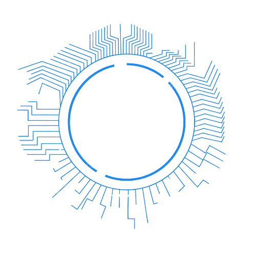
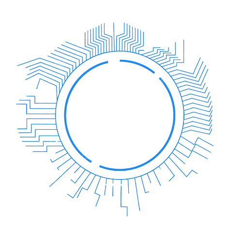
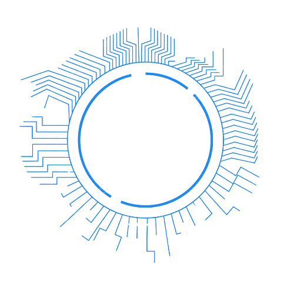
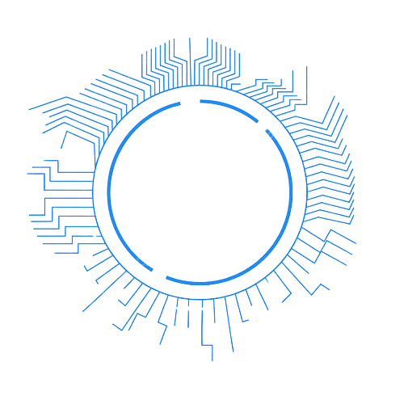

Memed Sumaedi M.Kom adalah master dalam bidang jaringan di sekolah SMKN 9 Kabupaten Tangerang, ia menguasai beberapa keahlian dalam jaringan yaitu infrastruktur Jaringan dan administrasi Jaringan, lalu ia juga mengajar di kelas 11 dan ia juga sangat mengedepankan kedisiplinan dan ketekunan para murid nya.